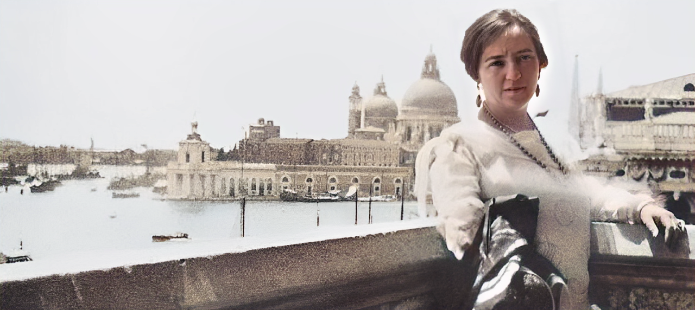
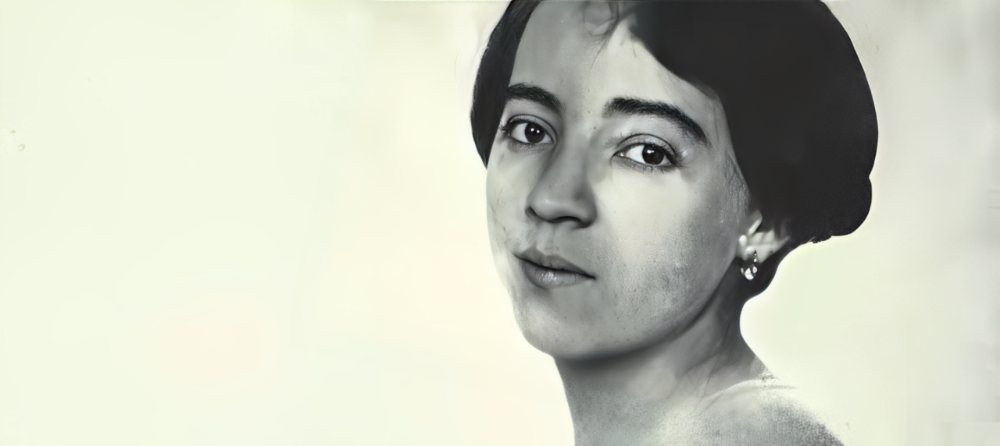
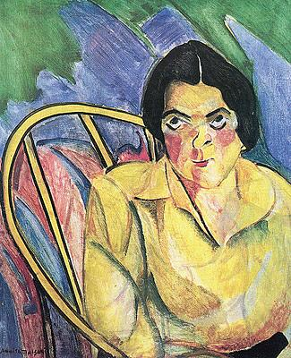
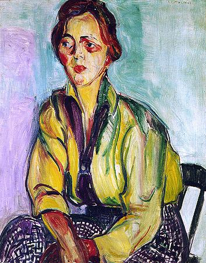
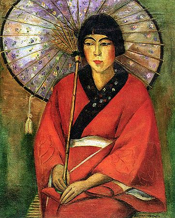
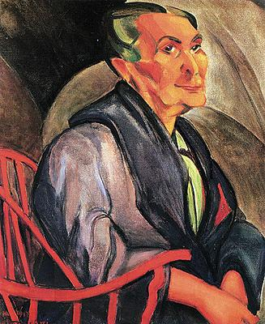
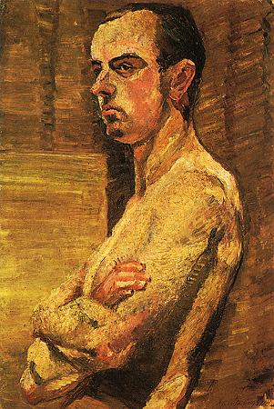
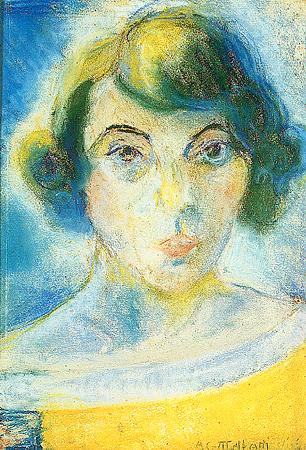
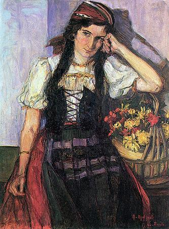
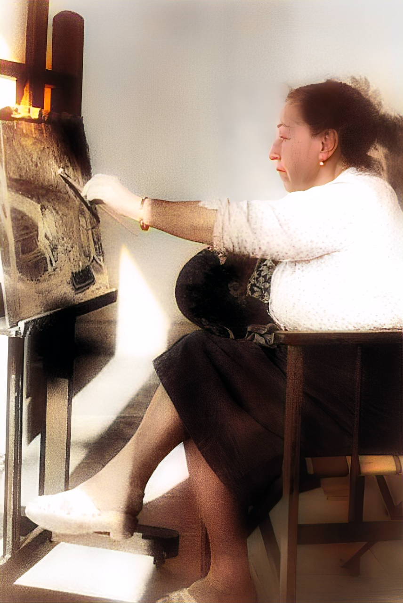

Com 18 anos, Anita Malfatti foi para os Estados Unidos estudar arte, desenvolvendo um estilo moderno que rompia com o academicismo da época.


Aos 32 anos, ela se destacou na Semana de Arte Moderna de 1922, sendo uma das principais representantes do movimento modernista no Brasil.
Quem é Anita Malfatti?
Anita Catarina Malfatti nasceu em São Paulo, em 2 de dezembro de 1889. Desde cedo, enfrentou desafios devido a uma deficiência motora no braço direito, o que a levou a desenvolver sua habilidade artística com a mão esquerda. Sua paixão pela arte a levou a estudar na Academia Imperial de Belas Artes de Berlim e, posteriormente, em Nova York, onde aprofundou seus conhecimentos sobre pintura expressionista. Em 1917, Anita realizou uma exposição em São Paulo que chocou o público e gerou uma crítica severa de Monteiro Lobato, intitulada "Paranoia ou Mistificação?". Apesar da recepção inicial controversa, sua obra foi fundamental para o desenvolvimento do Movimento Modernista no Brasil. Inspirada por correntes europeias como o expressionismo e o cubismo, suas pinturas traziam cores vibrantes, formas distorcidas e uma abordagem inovadora que rompia com o academicismo tradicional. Sua participação na Semana de Arte Moderna de 1922 consolidou sua importância no cenário artístico brasileiro, influenciando gerações de artistas e ajudando a estabelecer uma identidade visual moderna no país.
Algumas Obras
Clique na imagem para mais detalhes

A Boba(1915)
 A Estudante Russa(1915)
A Estudante Russa(1915)

A Estudante(1915)

A Japonesa(1924)

A Mulher de Cabelos Verdes(1915)

Academia(1912)

Auto Retrato(1922)

Georgina(1914)
O Estilo Inovador de Anita Malfatti

A obra de Anita Malfatti emerge como um testemunho potente de sua busca incessante por uma linguagem artística autêntica, um anseio que a impulsionou a romper, de forma decisiva e ousada, com os padrões estabelecidos na arte brasileira da época. Durante seus estudos intensivos em Berlim e Nova York, ela absorveu a efervescência das vanguardas europeias, como o Expressionismo e o Cubismo, que desafiavam as convenções visuais e conceituais. Essa imersão permitiu-lhe encontrar a liberdade expressiva necessária para construir um universo pictórico inteiramente próprio, distinto do academicismo então predominante.
Sua pintura, portanto, é marcada por características inconfundíveis: a intensidade das cores, muitas vezes usadas de forma não naturalista para amplificar a emoção; a expressividade das formas, que por vezes se mostram distorcidas para enfatizar a subjetividade; a pincelada visível e audaciosa que revela o gesto do artista; e uma profunda exploração da psicologia humana e do ambiente. Esses elementos, em conjunto, não apenas a tornaram uma figura central e catalisadora do modernismo brasileiro, mas também definiram um novo paradigma visual para a arte no país, abrindo caminho para a renovação estética e conceitual que culminaria na Semana de Arte Moderna de 1922.